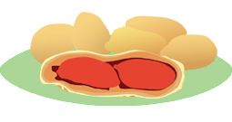

2019年11月号
「ピーナッツの日」いつかご存知？

突然ですが、「ピーナッツ」と「落花生」の違いってなんだかおわかりですか？
実はこの2つは同じものですが、木や殻など植物としての総称を「落花生」と呼び、実の部分だけを指す言葉を「ピーナッツ」と呼んでいるんです。
カシューナッツやクルミなども通称「ナッツ」と呼んでいますが、殻の有無で言い分けられているということが、何となく解るような気がします。
ということで、「ピーナッツの日」は、全国落花生協会が記念日として制定したのですが、その理由は次の3つだそうです。
① 落花生の新豆が出回る時季が11月であるから「11月」。
② 落花生の殻には2粒の豆が入っている（双子＝1と1が重なるから「11」）。
③ 落花生は「畑の土」とも呼ばれることから、「土」を分解すると『土＝十一＝「11」』。
ここまでくれば、皆さんもおわかりですよね！
すべて「1」並びにした「11月11日」が「ピーナッツの日」なのです。
ピーナッツは、アミノ酸組成にとても優れ、「たんぱく質・脂質・ビタミンB群・ビタミンE」などが豊富に含まれるため、生命力を増強して、脳の老化を遅らせる役割のあるという優秀な食品です。
特に、殻のまま保存すると酸化が予防できますので、購入する際は「殻付き」の「落花生」を買うのが絶対おススメ！！
11月11日は、ほかにも「チーズの日」や「鮭の日」なんていう記念日もあります。
秋の夜長に、これらの食品をおいしくいただき、「1111」で「機運到来」を目指してみてはいかがでしょう！！
 次月号へ
次月号へ